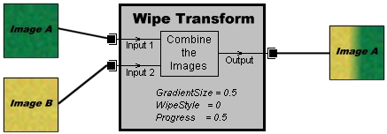

|
| ||
|
| ||
February 26, 1999
Microsoft® DirectX® Transform makes it easy for you to add image filters and transitions to your Web pages. The technology is designed to use input images and a set of rules about how to process the inputs to produce output image. This output can be a modified version of a single input or a combination of multiple inputs. And because a visitor only needs to download the input images instead of every frame of an animation, your sophisticated transitions will load very quickly. For a comprehensive summary about DirectXTransform that includes a discussion of the value it brings to customers, see the white paper at http://www.microsoft.com/directx/pavilion/dtransform/transwp.htm  .
.
Each DirectX Transform visual effect is produced by an object called a transform, which contains the detailed instructions for how to produce the effect on the page. A transform can have one or more inputs, which the transform uses to produce the output. These inputs can be static images or any DirectAnimation™ image behaviors (including movie files). Most transforms also have properties that control how the output is produced from the inputs. These inputs and properties are set with scripting languages, such as Microsoft JScript® or Microsoft Visual Basic® Scripting Edition (VBScript). In addition, each transform has a descriptive name such as Blur, DropShadow, or Slide, which tells you the type of effect it produces.
The following illustration shows how a transform uses input images to produce an output image for the Wipe transform.

The Wipe transform object uses the two input images as a basis for its output. It also uses the values of its properties to determine how to combine the two images. These properties are discussed in more detail in the Using Transform Properties section.
Transforms are used in Web pages through Microsoft DirectAnimation™. They are created as Microsoft ActiveX® objects on a Web page and displayed using DirectAnimation controls. The transform can be assigned DirectAnimation behaviors to define how they will animate over time. Defining these animation behaviors for a transform usually takes only a few lines of script.
For more information, see the following topics.
Each transform has properties that control how the output effect for that transform is produced. For example, the Wipe transform uses two properties to produce the effect of a transition region sweeping across the first input image to reveal the second input image. The GradientSize property controls the width of the transition region as a fraction of the image dimension. The WipeStyle property determines whether the transition region sweeps horizontally or vertically.
For a list of the properties of each transform, consult the Transform Reference.
Transforms can be categorized as DirectX Transform filters or transitions. Each category of transform is designed to be used differently.
A DirectX Transform filter accepts zero or more inputs and produces its output in a single step. Transforms such as Blur and Emboss are filters and typically perform a single modification to an image.
A DirectX Transform transition accepts zero or more inputs and gradually changes one input image into another in many steps. Transforms such as Slide, Fade, and Spiral are transforms that use different methods for the transitions. For example, the Slide transform slides one image out of view to reveal the second image, while the Fade transform changes the pixel colors of one image into the colors of the other image.
Another way to distinguish the two types of transform is by whether the transform supports the Progress parameter. If a transform supports the Progress parameter, it is a DirectX Transform transition; if it does not, it is a DirectX Transform filter. This is because all transitions are designed to use the Progress parameter in the DirectAnimation ApplyDXTransform function to create the animated effect. For transitions you can specify static or dynamic number behaviors for Progress to produce different output. Filters always specify a value of null for the Progress parameter.
You can use any of the transforms listed in the DirectX Transform Transitions and Filters section for graphics and animations on your Web pages. You can also create new transforms if you know how to write graphics applications using C++. For more information, see the DirectX Transform Software Development Kit (SDK)  .
.
Note This section assumes you are familiar with DirectAnimation controls, ActiveX objects, and scripting.
To use a transform in DirectAnimation, you typically follow these steps.
The Transforms Samples section shows several examples of transforms in DirectAnimation to help you get started.
<OBJECT ID="DAControl_Wipe"
STYLE="width:200;height:200"
CLASSID="CLSID:B6FFC24C-7E13-11D0-9B47-00C04FC2F51D">
</OBJECT>
Notice that the dimensions of the image area are specified as STYLE attributes of the OBJECT tag.
<SCRIPT LANGUAGE="JScript">
m = DAControl_Wipe.MeterLibrary;
</SCRIPT>
For the previous example, all script commands for the transform are located after the line that creates the MeterLibrary.
theTransform = new ActiveXObject("DXImageTransform.Microsoft.Wipe");
inputs = new Array(2);
inputs[0] = m.ImportImage("../art/imageA.jpg");
inputs[1] = m.ImportImage("../art/imageB.jpg");
Some transforms require a certain number of inputs, but others accept one or many inputs. For input information for a specific transform, see the Transform Reference.
In the following code, the forwardBvr variable is a DANumber that changes from 0 to 1 in three seconds, and backBvr is a similar variable that changes from 1 to 0 in three seconds. Both use the DirectAnimation Interpolate function to create these behaviors. The progressBvr variable is created as a sequenced behavior of the forwardBvr and backBvr behaviors, repeated forever.
forwardBvr = m.Interpolate(0, 1, 3);
backBvr = m.Interpolate(1, 0, 3);
progressBvr = m.Sequence(forwardBvr, backBvr).RepeatForever();
theTransform.GradientSize = 0.5;
theTransform.WipeStyle = 1;
The Transform Reference lists two properties for the Wipe transform: GradientSize and WipeStyle. The default value for GradientSize is 0.25, but the previous code changes that value to 0.5. Changing the WipeStyle property to a value of 1 causes the transition region to sweep up and down, instead of left and right.
theResult = m.ApplyDXTransform( theTransform, inputs, progressBvr );
The ApplyDXTransform function accepts three input parameters: a transform object, an array of input images, and a DANumber for the Progress parameter. The value returned by the function contains the transform output.
If the transform is not a DirectX Transform transition (such as BasicImage or Emboss), you can specify null for the progressBvr behavior.
DAControl_Wipe.Image = theResult.OutputBvr;
DAControl_Wipe.Start();
This is just one way that transforms can be used in DirectAnimation. For more examples, see the Transform Samples section.
If you write Web pages that use the transforms listed here, anyone with Microsoft Internet Explorer 5 will be able to see the transform output. Graphics programmers will continue to write new transforms that produce different effects on graphics inputs. After getting permission from the authors, you will be able to use these new transforms in your Web pages. However, visitors to your Web site can only see the transform output if they download the transform to their computer first.
You can make it easy for visitors to download new transforms in the following way. You can create an OBJECT tag with a link to the .dll file of the new transform. The CLASSID parameter of the OBJECT tag must contain the class identifier of one of the transforms in the .dll file. You then need to make sure that the OnLoad event handler for the page calls the script that creates the Microsoft ActiveX® object for the transform. The browser will download and install the .dll file to the user's computer before using the .dll file to create the transform object.
The following sample HTML file shows how this can be done using Microsoft JScript®.
<HTML>
<HEAD>
<TITLE>Transform Download Example</TITLE>
</HEAD>
<BODY onLoad="Main()">
<CENTER>
<OBJECT ID="DAControl"
STYLE="width:320;height:240"
CLASSID="CLSID:B6FFC24C-7E13-11D0-9B47-00C04FC2F51D">
</OBJECT>
</CENTER>
<OBJECT ID="transformDownload"
CLASSID="CLSID:1FD2603E-36BF-11D2-8513-00C04FD7B5C0"
CODEBASE="http://example.microsoft.com/folder/newTransform.dll">
</OBJECT>
<SCRIPT LANGUAGE="JScript">
<!--
function Main()
{
m = DAControl.MeterLibrary;
xf = new ActiveXObject("DXImageTransform.TransAuthor.TransTitle")
result = m.ApplyDXTransform(xf, null, null);
DAControl.Image = result.OutputBvr;
DAControl.Start();
} //-->
</SCRIPT>
</BODY>
</HTML>
The BODY tag for the page contains a script function called Main, which creates the transform ActiveX object. After the script creates the DAControl object, it creates the object that loads the transform. The browser will then prompt the user about whether to download and install the specified transform .dll file. When the download is complete, the Main function is called and the page will display as usual.
For more information on the secure download of Web page components such as transforms, see MSDN Online's Internet Component Download Overview
Did you find this article useful? Suggestions for other articles? Write us!
© 1999 Microsoft Corporation. All rights reserved. Terms of use.